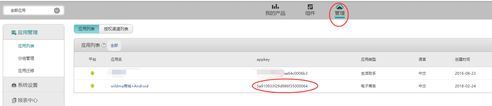
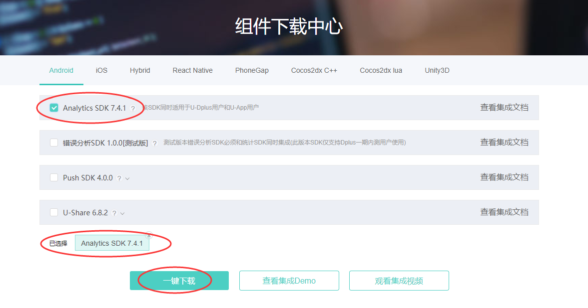
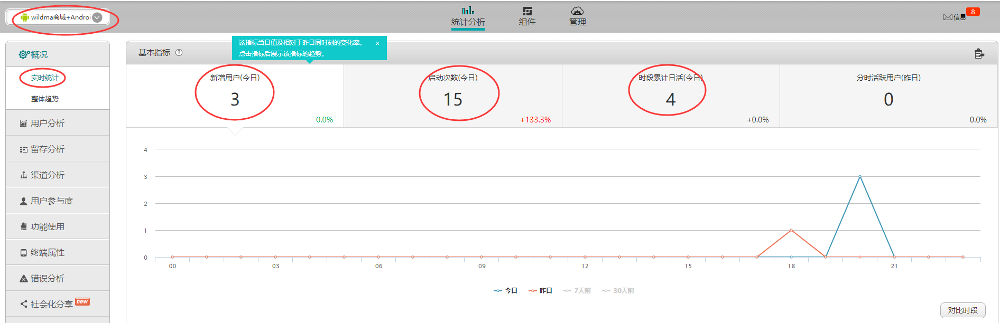
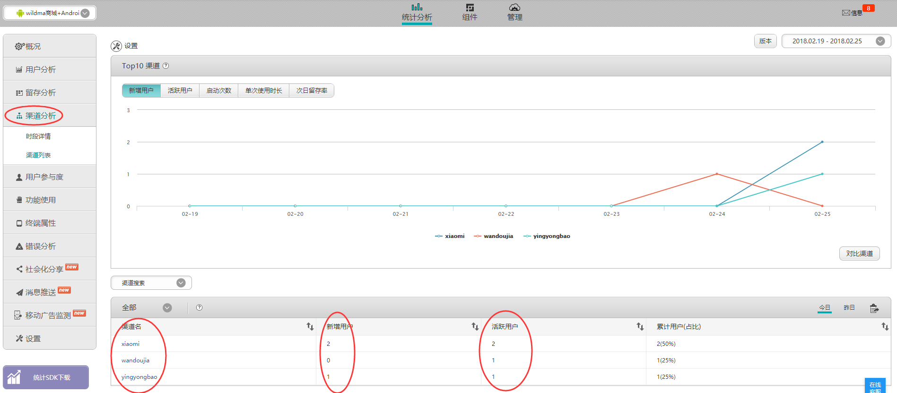
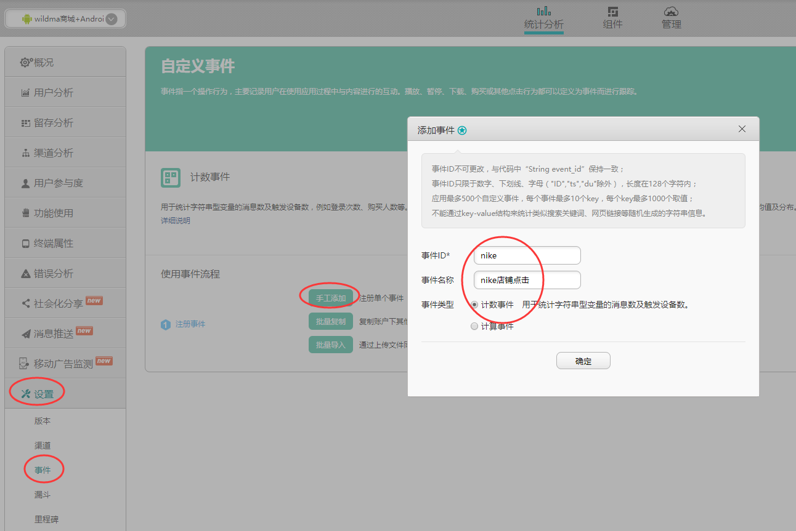
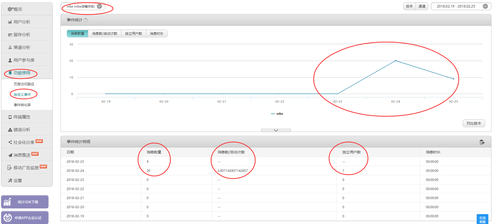
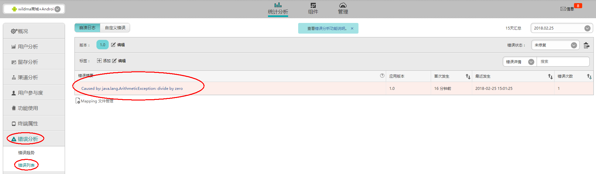

前言
app上线后，一般公司都希望跟踪app在市场上的使用情况。包括新增用户、活跃用户、渠道信息、错误信息等，还有例如商城类的app，需要跟踪用户最喜欢浏览哪种类型的店铺或商品。这些都可以通过集成友盟统计来轻松实现。
（小提示：由于截的都是大图，可能显示比较模糊，需要查看清晰图片则鼠标点击图片放大即可）
一、集成
1.1 获取Appkey
集成友盟SDK之前，首先需要到友盟官网注册并且添加新应用，获取Appkey（一般公司项目不需要自己申请账号，跟项目经理要即可）。每个应用对应的Appkey是唯一的，如下：

1.2 导入SDK
有两种方法：（本Demo中采用第二种方法）
方法一：下载SDK，将解压出来的jar包复制到工程libs/目录下。
下载地址：http://mobile.umeng.com/custom_sdk
只需要下载Analytics SDK即可，如下：
方法二：添加SDK在maven中心库的线上依赖
1、在app的builde.gradle中添加依赖/*友盟统计需要的最新版本组件化基础库和统计SDK*/ compile 'com.umeng.sdk:common:latest.integration' compile 'com.umeng.sdk:analytics:latest.integration'如果无法正常集成，则需要在项目的builde.gradle中添加如下配置：
allprojects { repositories { mavenCentral() } }
1.3 在AndroidManifest.xml中添加权限、配置Appkey与渠道（Channel）
1、添加权限
<!--友盟统计所需权限-->
<uses-permission android:name="android.permission.ACCESS_NETWORK_STATE"></uses-permission>
<uses-permission android:name="android.permission.ACCESS_WIFI_STATE" />
<uses-permission android:name="android.permission.INTERNET"></uses-permission>
<uses-permission android:name="android.permission.READ_PHONE_STATE"></uses-permission>2、配置Appkey
<!--value的值填写你在友盟后台申请的应用Appkey-->
<meta-data android:value="5a910933f29d986f35000064" android:name="UMENG_APPKEY"/>3、配置渠道
由于一般会有多个渠道，所以这里的渠道名称不能写死，应该设置成动态的，如下：
<!--value的值填写渠道名称，例如yingyongbao。这里设置动态渠道名称变量-->
<meta-data android:value="${UMENG_CHANNEL_VALUE}" android:name="UMENG_CHANNEL"/>在app的builde.gradle中配置需要的渠道（这里只测试应用宝、豌豆荚、小米），对应上面的渠道名称变量。
/*配置渠道*/
productFlavors {
yingyongbao {
manifestPlaceholders = [UMENG_CHANNEL_VALUE: "yingyongbao"]
}
wandoujia {
manifestPlaceholders = [UMENG_CHANNEL_VALUE: "wandoujia"]
}
xiaomi {
manifestPlaceholders = [UMENG_CHANNEL_VALUE: "xiaomi"]
}
}完整AndroidManifest.xml如下：
<?xml version="1.0" encoding="utf-8"?> <manifest package="com.wildma.umenganalytics" xmlns:android="http://schemas.android.com/apk/res/android"> <!--友盟统计所需权限--> <uses-permission android:name="android.permission.ACCESS_NETWORK_STATE"></uses-permission> <uses-permission android:name="android.permission.ACCESS_WIFI_STATE" /> <uses-permission android:name="android.permission.INTERNET"></uses-permission> <uses-permission android:name="android.permission.READ_PHONE_STATE"></uses-permission> <application android:name=".MyApplication" android:allowBackup="true" android:icon="@mipmap/ic_launcher" android:label="@string/app_name" android:supportsRtl="true" android:theme="@style/AppTheme"> <activity android:name=".MainActivity"> <intent-filter> <action android:name="android.intent.action.MAIN"/> <category android:name="android.intent.category.LAUNCHER"/> </intent-filter> </activity> <!--友盟统计配置Appkey与Channel--> <!--value的值填写你在友盟后台申请的应用Appkey--> <meta-data android:value="5a910933f29d986f35000064" android:name="UMENG_APPKEY"/> <!--value的值填写渠道名称，例如yingyongbao。这里设置动态渠道变量--> <meta-data android:value="${UMENG_CHANNEL_VALUE}" android:name="UMENG_CHANNEL"/> </application> </manifest>完整app的builde.gradle如下：
apply plugin: 'com.android.application' android { compileSdkVersion 26 buildToolsVersion "26.0.2" defaultConfig { applicationId "com.wildma.umenganalytics" minSdkVersion 14 targetSdkVersion 26 versionCode 1 versionName "1.0" testInstrumentationRunner "android.support.test.runner.AndroidJUnitRunner" } buildTypes { release { minifyEnabled false proguardFiles getDefaultProguardFile('proguard-android.txt'), 'proguard-rules.pro' } } //签名信息配置 signingConfigs { release { storeFile file("./keystore/UMengAnalyticsKeystore.jks") keyAlias "UMengAnalyticsKeystore" storePassword "123456" keyPassword "123456" } debug { storeFile file("./keystore/debug.keystore") } } /*配置渠道*/ productFlavors { yingyongbao { manifestPlaceholders = [UMENG_CHANNEL_VALUE: "yingyongbao"] } wandoujia { manifestPlaceholders = [UMENG_CHANNEL_VALUE: "wandoujia"] } xiaomi { manifestPlaceholders = [UMENG_CHANNEL_VALUE: "xiaomi"] } } } dependencies { compile fileTree(dir: 'libs', include: ['*.jar']) androidTestCompile('com.android.support.test.espresso:espresso-core:2.2.2', { exclude group: 'com.android.support', module: 'support-annotations' }) compile 'com.android.support:appcompat-v7:26.0.0-alpha1' testCompile 'junit:junit:4.12' /*友盟统计需要的最新版本组件化基础库和统计SDK*/ compile 'com.umeng.sdk:common:latest.integration' compile 'com.umeng.sdk:analytics:latest.integration' }
1.4 添加初始化方法
在项目工程的自定义application中的onCreate方法中添加以下方法：
public class MyApplication extends Application {
@Override
public void onCreate() {
super.onCreate();
/**
* 初始化common库
* 参数1:上下文，必须的参数，不能为空
* 参数2:友盟 app key，非必须参数，如果Manifest文件中已配置app key，该参数可以传空，则使用Manifest中配置的app key，否则该参数必须传入
* 参数3:友盟 channel，非必须参数，如果Manifest文件中已配置channel，该参数可以传空，则使用Manifest中配置的channel，否则该参数必须传入，channel命名请详见channel渠道命名规范
* 参数4:设备类型，必须参数，传参数为UMConfigure.DEVICE_TYPE_PHONE则表示手机；传参数为UMConfigure.DEVICE_TYPE_BOX则表示盒子；默认为手机
* 参数5:Push推送业务的secret，需要集成Push功能时必须传入Push的secret，否则传空
*/
//如果AndroidManifest.xml清单配置中没有设置appkey和channel，则可以在这里设置
// UMConfigure.init(this, "58edcfeb310c93091c000be2", "Umeng", UMConfigure.DEVICE_TYPE_PHONE, "1fe6a20054bcef865eeb0991ee84525b");
UMConfigure.init(this, UMConfigure.DEVICE_TYPE_PHONE,"");
}
}通过上面的步骤，友盟统计就已经集成好了，下面来看看它各种统计的使用。
二、使用
2.1 Session统计
即启动数据的统计（包括新增用户、活跃用户、启动次数、使用时长等基本数据）
需要在每个Activity的onResume方法中调用 MobclickAgent.onResume(Context),
onPause方法中调用 MobclickAgent.onPause(Context)，如下：
protected void onResume() {
super.onResume();
MobclickAgent.onResume(this);
}
protected void onPause() {
super.onPause();
MobclickAgent.onPause(this);
}确保在所有的Activity中都调用 MobclickAgent.onResume() 和onPause()方法。
如果Activity之间有继承或者控制关系请不要同时在父和子Activity中重复添加nPause和nResume方法，否则会造成重复统计。例如在BaseActivity中添加过，则它的子类就不需要添加了。
当应用在后台运行超过30秒（默认）再回到前端，将被认为是两个独立的session(启动)，例如用户回到home，或进入其他程序，经过一段时间后再返回之前的应用。可通过接口：setSessionContinueMillis(long interval) 来自定义这个间隔（参数单位为毫秒）。
如果开发者调用kill或者exit之类的方法杀死进程，请务必在此之前调用onKillProcess(Context context)方法，用来保存统计数据。
安装app启动后。在友盟后台就可以看到统计的数据了。如下：
新增用户、启动次数、日活等数据：

渠道分析数据：

2.2 自定义事件统计
自定义事件可以实现在应用程序中埋点来统计用户的点击行为。例如我们的应用是商城类的，就需要统计用户是喜欢进入“nike”店铺，还是“new banlance”店铺。自定义事件目前包括”计数事件”和”计算事件”，这里主要讲下计数事件。
1、首先需要在友盟后台添加自定义事件：设置-事件-手工添加-添加事件。如下：

2、在需要监听自定义事件的地方添加代码，如下模拟点击进入”nike“店铺。
第二个参数为当前统计的事件ID，需要与友盟后台设置的事件ID一致（即上图的事件ID）。
MobclickAgent.onEvent(this, "nike");//参数二为当前统计的事件ID3、运行app，触发该事件后。在友盟后台就可以看到统计的数据了。如下：
其中消息数量即为事件被触发的次数。

2.3 错误统计
错误分析是友盟为移动开发者提供的Crash收集和分析工具，帮助开发者监测App在移动设备上的运行状况，及时发现并解决错误，提升App的稳定性。
Android统计SDK从V4.6版本开始内建错误统计，不需要开发者再手动集成。
SDK通过Thread.UncaughtExceptionHandler 捕获程序崩溃日志，并在程序下次启动时发送到服务器。 如不需要错误统计功能，可通过此方法关闭
MobclickAgent.setCatchUncaughtExceptions(false);如果开发者自己捕获了错误，需要上传到【友盟+】服务器可以调用下面方法：
public static void reportError(Context context, String error)
//或
public static void reportError(Context context, Throwable e)现在我在demo中模拟一次错误，如下：
/**
* 模拟错误
* @param view
*/
public void createError(View view) {
int i = 1 / 0;
}再到友盟后台查看错误，如下：

2.4 其他统计
上面三个统计是比较常用的统计，还有很多统计，例如账号统计、页面统计等就不一一列举了。有需求的可以参考友盟统计集成文档
本文demo源码地址：https://github.com/wildma/UMengAnalytics